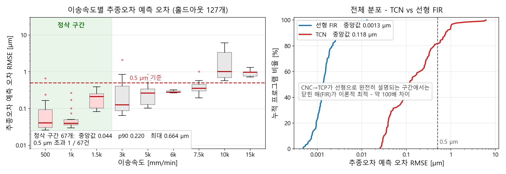

CNC 지령에서 TCP 궤적을 예측하는 파이프라인
01왜 TCN인가
인과성
서보는 미래 지령을 모름. 합성곱을 과거로만 패딩하면 미래를 보는 경로가 없음
긴 메모리
임펄스 응답 꼬리 τ ≈ 50–70 ms → 510 ms 필요. 팽창률 1→128로 블록 8개에 1,021 샘플
정지 조건
지령이 멈추면 오차도 0. 편향을 빼면 f(0)=0이 구조로 보장됨
좌표 무관
입력이 증분 ΔCNC라 작업좌표 오프셋이 소거됨. 실측상 108 mm까지 출력 불변
구조
| 블록 | 8 (잔차, causal conv × 2 + ReLU) |
| 커널 / 채널 | 5 / 48 |
| 팽창률 | 1, 2, 4, 8, 16, 32, 64, 128 |
| 수용영역 | 1 + 4 × Σdil = 1,021 샘플 = 510.5 ms |
| 선형 직결 | 6 → 3, 편향 없음 (FIR과 같은 함수 클래스) |
대안을 쓰지 않은 이유
| RNN / LSTM | 수용영역이 설계값으로 드러나지 않음. 수만 스텝 순차 전개로 학습이 느림 |
| Transformer | 시퀀스 2~3만으로 어텐션 비용 과다. 의존성이 전역이 아니라 국소(510 ms) |
02데이터와 입출력
구 시뮬레이터 DOE 968런 중 유효 844런. 신규 시뮬레이터 데이터 아님 — 신규 환경에서는 재학습 필요
| 시간 격자 | 0.5 ms 균일 (2,000 Hz) |
| 입력 / 출력 | 지령 증분 6채널 → 추종오차 3채널 (X/Y/Z) |
| 수용영역 | 1,021 샘플 = 510.5 ms |
| G00 / G01 | feed 열 기준. 급속이송 값은 데이터에서 자동 검출 |
| 손실 제외 | 크롭 앞 1,021 샘플, 빈 행, 급속 구간 가중 0.1 |
03준비
CNC2TCP/
├─ Runs/ 시뮬레이션 결과 (git 추적 안 함)
│ ├─ DOE_0001_RANDOMWALK3D_FINE_F500_S01/
│ │ └─ 412_op1_out.csv 읽는 파일은 이것 하나
│ └─ ...
├─ code/
│ ├─ config.py 모든 경로·하이퍼파라미터
│ ├─ scripts/ 00 ~ 11, 번호가 곧 실행 순서
│ ├─ tcn_cnc2tcp/
│ └─ work/ 산출물 전부
├─ .venv/
└─ requirements.txt런 폴더의 *_in.json, *_out.json, *.nc는 읽지 않음
| CSV 필수 열 | 단위 | 쓰임 |
|---|---|---|
| time | s | 격자 확인, 필요 시 리샘플 |
| feed | mm/min | G00 / G01 구분 |
| block# | – | 블록 단위 지표 |
| cnc_x, cnc_y, cnc_z | mm | 입력 |
| tcp_x, tcp_y, tcp_z | mm | 정답 |
Runs/가 다른 드라이브에 있거나 설정을 바꿀 때:
$env:TCN_RUNS_DIR = "D:\Runs"
python code\scripts\05_train.py --set train.epochs=400 --set model.channels=6404실행 순서
환경 확인 00_check_env.py
python code\scripts\00_check_env.py- 결과
- GPU·의존성 버전, 인과성·f(0)=0 자가 점검
런 스캔 01_scan_runs.py
python code\scripts\01_scan_runs.py- 필요
Runs/의*_out.csv- 결과
work/meta/index.csv,machine.json(급속이송 검출값)
학습 대상 선별 02_select_doe.py
# 전부 사용 — 신경망에는 이쪽이 유리
python code\scripts\02_select_doe.py --criterion all --set select.tag=all
# 여기 커버리지 기준으로 50종
python code\scripts\02_select_doe.py --criterion excitation --set select.tag=r4 --set select.n_programs=50- 필요
index.csv- 결과
work/meta/selection_<tag>.txt,ranking.csv
에폭당 크롭 수가 고정이라 프로그램 수와 에폭 시간이 무관. 844런 전체를 써도 추가 비용은 캐시 1회(약 15분)와 RAM 1.5 GB뿐
로더 검증 03_validate_loader.py 선택
python code\scripts\03_validate_loader.py --selection all- 결과
work/reports/loader_validation.csv
과적합 테스트 04_overfit_test.py 선택
python code\scripts\04_overfit_test.py --n 3 --epochs 40- 결과
- 프로그램 3개로 수렴하는지 확인. 여기서 안 내려가면 본 학습 불필요
본 학습 05_train.py
python code\scripts\05_train.py --selection all --set train.name=tcn_all ^
--set model.dilations=1,2,4,8,16,32,64,128 ^
--set model.linear_skip=True ^
--set train.epochs=120- 필요
- 선별 파일, GPU
- 결과
work/runs/<name>/—best.pt,split.json,history.json,config.json,training_curve.png- 소요
- 844런 · 120 epoch 기준 약 52분 (RTX 3060 12GB)
FIR 기준선 식별 06_fir_baseline.py
python code\scripts\06_fir_baseline.py --run tcn_all- 필요
split.json- 결과
fir_baseline.npz,metric9_fir_*.csv(약 13초)- 건너뛰면
- 07이 FIR 없이 평가. 그림에 FIR 곡선과 지표 9가 빠짐
평가 07_evaluate.py
python code\scripts\07_evaluate.py --run tcn_all- 필요
- 체크포인트, (권장)
fir_baseline.npz - 결과
work/reports/<name>/test/— 지표 1~5 CSV,fig1~3_*.png,summary.json,tcp/*.csv
TCN vs FIR 비교 08_compare_fir_tcn.py
python code\scripts\08_compare_fir_tcn.py --run tcn_all- 필요
- 07의
tcp/*.csv— torch·GPU 불필요 - 결과
comparison/—comparison_per_program.csv,coverage.csv,fig_vibration_*.png
선택 단계
| 09_sweep_ndoe.py | 프로그램 수 대비 오차 포화점 |
| 10_sweep_rf.py | 수용영역 대비 오차 |
| 11_resample_robustness.py | 거친·불균일·누락 격자에 대한 TCN 강건성 (05절 표의 TCN 판) |
| infer.py | 임의 타임스탬프 → 표준 격자 → 예측 → 역보간 |
05추론 — 다른 데이터가 들어오면
from infer import Predictor
p = Predictor("tcn_all")
tcp = p.predict(t, cnc, feed) # 임의 타임스탬프, 임의 dt| 입력 열 | |
|---|---|
| time, cnc_x/y/z | 필수 |
| feed | 선택. 없으면 전부 G01로 간주 — 급속 구간 예측이 나빠짐 |
| tcp_x/y/z | 선택. 있으면 오차를 함께 보고 |
그대로 받는 것
| 불균일 간격 | 무해. 평균 0.5 ms에 간격만 ±40% 흔들어도 추가 오차 0.0008–0.0105 µm(선형 FIR 기준). 관건은 간격의 균일성이 아니라 평균 샘플링률 |
| 0.5 ms가 아닌 dt | 스플라인으로 표준 격자에 올림. 모델은 항상 0.5 ms만 봄 |
직접 확인해야 하는 것
01_scan_runs.py는 dt > 2.7 ms인 런을 거부. 반면
Predictor에는 상한이 없음 — 얼마나 거친 입력이든 받아서 보간
허용치는 dt가 아니라 이송속도가 결정. 피드가 높을수록 같은 시간에 궤적이 더 많이 변하므로 더 촘촘해야 함
| 절삭이송 | 1.0 ms | 2.0 ms | 2.5 ms | 4.0 ms |
|---|---|---|---|---|
| F500 | 0.001 | 0.003 | 0.005 | 0.014 |
| F1500 | 0.006 | 0.017 | 0.025 | 0.078 |
| F15000 | 0.047 | 0.098 | 0.141 | 0.479 |
0.5 ms 원본을 솎아 스플라인으로 되돌렸을 때의 추가 오차, µm. 0.5 ms 원본 기준은 0.0005–0.0009 µm. 선형 FIR로 측정한 값
TCN은 이 표로 측정되지 않음. 다만 학습 때 같은 손상을 증강으로 겪음 —
크롭의 50 %가 1/2/4/8배 솎임, 간격 지터 0–50 %, 5 % 샘플 누락을 거쳐 스플라인으로 복원됨.
FIR은 그런 적 없으므로 TCN이 더 강건할 것으로 보나 미확인.
확인하려면 11_resample_robustness.py --run <name>
- 정삭(F≤1500) 용도 — 2 ms까지 무해
- 고피드 포함 — 1 ms 이하. 2.7 ms 한계는 이 경우 과도하게 느슨함
신뢰할 수 없는 구간
- 앞 510 ms — 이력 없음. 모델이 입력 시작 이전을 정지 상태(TCP = CNC)로 가정하므로, 가공 중간부터 잘라낸 구간은 앞부분을 버릴 것
- 510 ms보다 짧은 입력 — 전체가 해당
feed가 없는 입력 — 급속 구간이 절삭으로 간주됨
현재 844런은 전부 native 0.5 ms, 리샘플된 런 0개. 위 숫자는 원본을 솎아 만든 것으로, 리샘플 경로가 실제 거친 데이터로 검증된 적은 없음
06성능
홀드아웃 127개 프로그램. 지표는 추종오차 예측 오차 — 예측한 e와
실제 e의 차이, 3축 벡터 RMSE. 가공면과 비교한 형상오차가 아님

비교 대상인 FIR
- 같은 6채널 입력 → 3채널 출력의 선형 필터. 축당 1,021탭 × 6채널 = 6,126 계수
- 학습이 아니라 닫힌 해. 약 13초
- 이 데이터의 CNC→TCP가 사실상 정확히 선형이므로, 참고치가 아니라 이론적 최적해
| 추종오차 예측 오차 | 중앙값 | p90 | 최대 | 정삭 중앙값 | 소요 |
|---|---|---|---|---|---|
| TCN | 0.118 | 0.764 | 6.14 | 0.044 | 52 분 |
| 선형 FIR | 0.0013 | 0.0036 | 0.0129 | 0.0011 | 13 초 |
단위 µm. 정삭 = 절삭이송 1,500 mm/min 이하 67개

- 정삭 67개 중 66개가 0.5 µm 이내. 넘는 1개는 서브밀리미터 반전 경로
- 진폭·위상 모두 재현됨
- 3 µm 초과는 10,000 mm/min의 2개뿐. 0.5 µm 초과 10개는 전부 3,000 mm/min 이상
- FIR과 약 100배 차이 — 정확도 한계가 아니라 최적화 한계. 선형 해가 신경망의 가설공간 안에 있는데도 경사하강이 거기까지 수렴하지 못함
형상오차가 필요하면 예측 TCP(tcp/*.csv)를 외부 형상 파이프라인에 투입해야 함.
그 단계는 이 저장소 밖